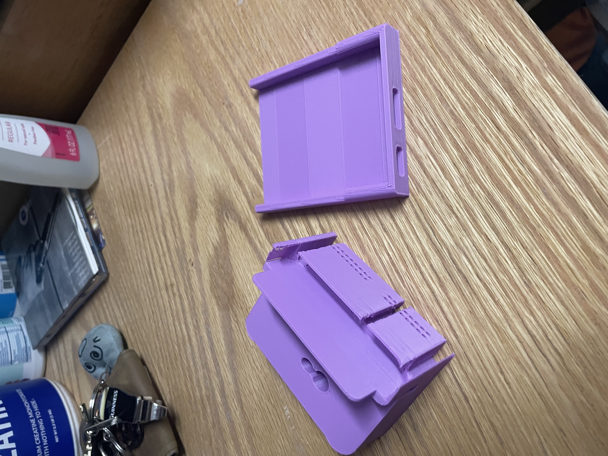
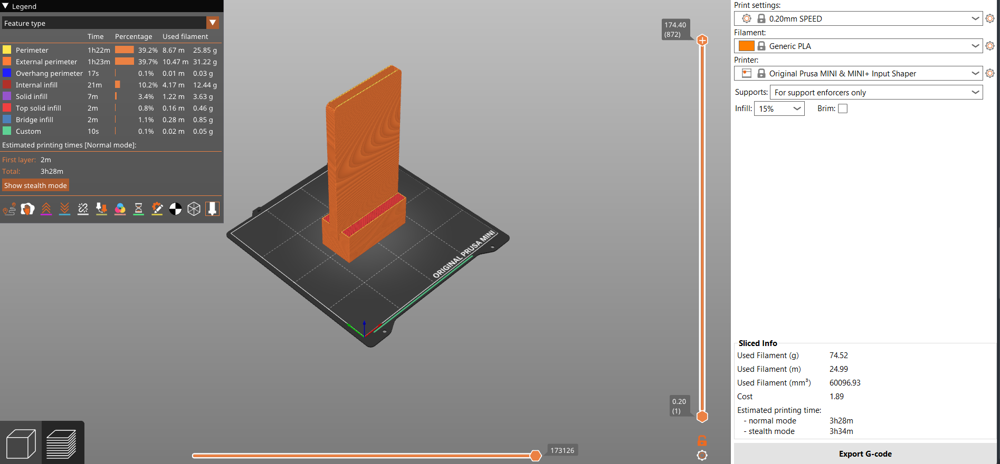
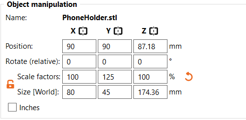

Project 2
Project 2 Overview
The goal of this second project was to introduce the computer-assisted design (CAD) process. Through this project, the entire 3D printing design workflow is showcased, from identifying a problem to final design, with all the steps in between. At least two prints are required for this project, one print remixing two publicly available models made using TinkerCAD, the other an original print designed in Onshape, furthering the design goals of the first print.
The first step of this project was to define a problem that my design would solve. Recently, my phone has been incredibly difficult to charge. It will only charge with a small handful of chargers and only when the charger is pushed into the charging port at a specific angle. Frequently, it will only charge when the charger is being held in the charging port. I therefore decided to develop a charging stand that might make my experience charging my phone a little easier. This design would have to use the phone's own weight to press the charger into the charging port, allow the angle between the phone and the charger to be adjusted, and hold the phone in place to ensure that the phone won't fall and cease charging.
This design would require a phone holder, in addition to a charger access hole, and a strong base to prevent the phone holder from sliding or falling.
Print 1: TinkerCAD Remix
For the TinkerCAD remix, I downloaded two models from Thingaverse: A phone stand and a multi-purpose charging stand. The idea was to use the phone stand as a cover for the charging stand to hold the phone in place. My first order of business was to remove the apple watch charge, as I don't have any need of it. I then imported the phone stand and removed the back of it (the actual stand), as I intended only to use it as a cover for the charging stand. I placed the "cover" and the charging stand together as I would have them ideally connect and used the mesh of the cover to cut a hole in the mesh of the phone charger, to allow them to slot together once printed.
With these changes, I was ready to start slicing. My first print failed due to a lack of contact area between the cover and the baseplate, as I had left it at a slight angle in the exported .stl file from TinkerCAD. After fixing this, the print continued as intended, printing the cover and the charging stand as two separate pieces.
Print time was 3:24 and 82.57 grams of filament were used.
Print 1 Reflections
The first major issue with the print was that it was too large for the baseplate. PrusaSlicer automatically scaled it down, giving me a pop up after importing the .stl that I foolishly closed without reading, assuming it to be one of the typical requests to share data. Ideally, I would have split this print across two different print jobs, to allow the print to be made at full scale. Due to this oversight, my phone does not fit into the prototype. Additionally, I failed to consider that holes tend to close up as the filament cools, meaning that the cover can only fit into the phone charger upside down. Due to this error, even a smaller phone cannot fit into the charger stand with the cover on. In the future, I plan to be more cautious of scale, in regards to both the size of my print and allowing greater clearance for holes to begin to close.
To produce my Onshape design I had to consider the issues with my prototype, assuming the print did not suffer from these errors. One of the biggest pain points was the floor that prevented any detailed finagling of the charger, which is typically necessary these days for my phone to actually charge. I also wanted the phone to stand upright rather than being slanted, to ensure more pressure on the phone charger. Finally, I wanted to be sure that I retained the sleek, professional design from the phone charger I downloaded.
Print 2: Onshape Design
For this design, I began with a simple retangle sketch and extruded it. This was done with some clearance on top of the dimensions of the iPhone 12. An iPhone 12 is 71.5x146.7x7.4 mm. The dimensions of the phone holder were 76.5x151.7x10 mm. The shell tool was then used with a border of 2.5 mm to create the slot for the phone. For aesthetic purposes, the corners on the phone holder were rounded using the fillet tool. A second sketch was then created and extruded, 57x33x20 mm, to serve as the base. Using the shell tool, a hole was created in the base with a border of 6 mm to allow the charger to be fed through. Using the drill tool, a hole with a diameter of 25 mm was drilled into the back of the base to facilitate the phone charger. For purely aesthetic purposes, a second hole was drilled across the the top of the stand with a diameter of 14 mm where the phone holder will be attached. Using the transform tool, the base and the phone holder were attached. This print was successful on the first attempt.
Despite my additional alotted clearance in the dimensions to ensure adequate space for the phone, the phone camera stuck out too far for the phone to fit completely within the phone holder. Therefore, it was necessary to reprint, increasing the scale on the y axis to 125% in PrusaSlicer. With this adjustment, the phone was able to fit neatly into the phone holder, however there was still not enough space for the phone to be inserted with the case on.
First iteration print time was 3:28, using 74.52 grams of filament.
Second iteration print time was 3:41, using 92.07 grams of filament.
First iteration, front & back

First iteration vs second iteration (difference in width is most evident in the base)
 First iteration in PursaSlicer & modified settings for second iteration
Print 2 Reflection
The second print was far more successful than the first. Although this print required 2 iterations, the error made was extremely minor. Although I attempted to apply my learnings from the smaller-than-intended holes from the first print, my corrections still left me with a smaller-than-intended hole on the first iteration. I am, therefore, curious as to how one can determine how much a hole will shrink as the filament cools, to allow for a mathematical solution to this issue rather than simply making the hole a little bigger in hopes it will end up being about the original size. Ideally, by the time I next print, I would like to have investigated this question by comparing the dimensions of the final print against the intended dimensions using precise tools to determine exactly how much larger I should make holes in future prints.
Final Reflection
This introduction to the full CAD through CAM design process was extremely insightful. Through this project, the process of iterative design was used to develop a final usable product. The first print was excellent practice for developing a prototype and working within limitations. The many issues I encounted with my first prototype were greatly informative for my final design. The need of greater mobility for the phone within the phone holder and the consideration for scaling, particularly the need to scale up holes, were critical to my final design. Through the CAD of the final product, I was able to naturally learn and explore the various tools and offerings of Onshape. This process made me much more comfortable with the software than either of the tutorials we did in preparation for class, as I found my own use of the software much more instructive than recreating something that someone else had made. Finally, my need to rescale and reprint my final design added additional depth to the design process, by taking me back to the prototyping phase when I thought I was done.
The final phone charging device works quite well, allowing me to charge my phone somewhat more easily. I only had the opportunity to appreciate this once, however, as, just after bringing my final design back to my room, I ended up fixing my phone's charging port, allowing me to charge it normally. Nonetheless, I would say this design was a success, as it did resolve my problem, even if this issue ceased altogether only shortly after the solution was implemented.